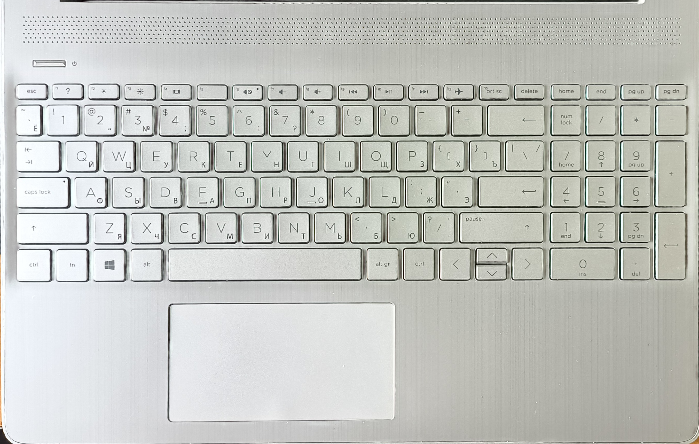
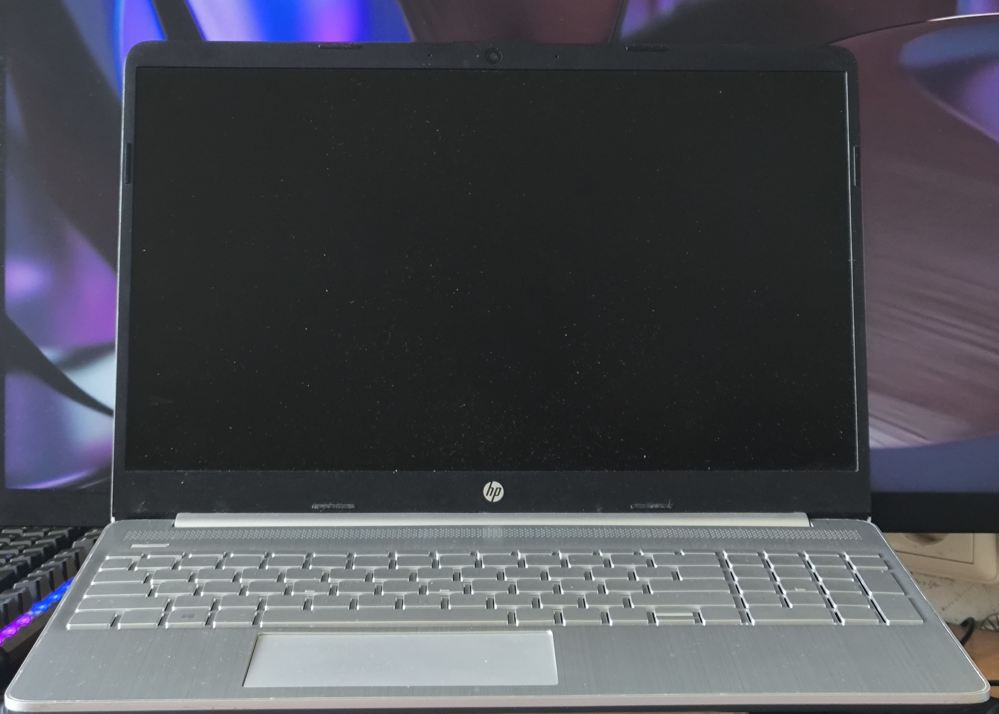

Это был мой первый ноутбук. Не самый быстрый. Не самый мощный. Но именно с него всё началось.
С пятого класса он был рядом. Мы прошли через десятки проектов, сотни часов кода, тысячи ошибок, странных багов и внезапных озарений. На нём рождались мои первые идеи, игры, сайты, нейросети.
Он не жаловался. Даже когда я запускал Blender, даже когда пытался тренировать ИИ, даже когда бил по клавиатуре в ярости. Он просто продолжал дышать, крутить кулером, и быть рядом.
Зимой 2024 года, после случайного удара, его видеовывод умер. Я пытался всё восстановить. Но внутри уже была тишина.
Теперь он уходит. Не в корзину. А в историю. Потому что был не просто железкой. А моим первым спутником.
Здесь похоронен не кусок кремния, а целая эпоха.
Этот ноутбук видел первые проекты, первые баги и первые победы — от Hello World до мучительных деплоев в 3 ночи.
Он ревел кулером и замолкал перед ошибкой, но всегда был рядом. Спасибо, старичок.
